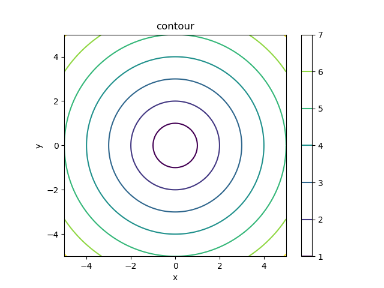
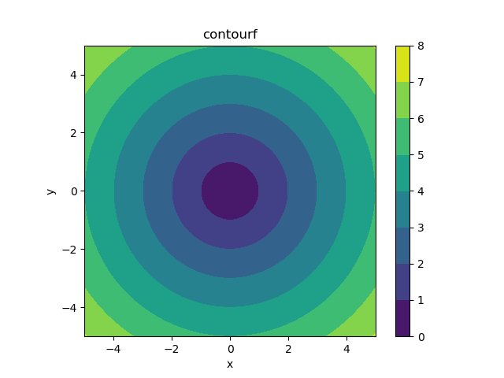

https://matplotlib.org/stable/api/_as_gen/matplotlib.pyplot.contour.html
https://matplotlib.org/stable/api/_as_gen/matplotlib.pyplot.contourf.html
https://matplotlib.org/stable/api/_as_gen/matplotlib.pyplot.colorbar.html
https://numpy.org/doc/stable/reference/generated/numpy.meshgrid.html
'contour' and 'contourf' draw contour lines and filled contours, respectively.
# matplotlib.pyplot.contour(*args, data=None, **kwargs) # Call signature: # contourf([X, Y,] Z, [levels], **kwargs) # X, Y : array-like, the coordinates of the values in Z. # Z : array-like, the height values over which the contour is drawn.
# matplotlib.pyplot.contourf(*args, data=None, **kwargs) # Call signature: # contourf([X, Y,] Z, [levels], **kwargs)
# contour1.py
import numpy as np
import matplotlib.pyplot as plt
x = np.linspace(-5,5,101)
y = np.linspace(-5,5,101)
xx, yy = np.meshgrid(x, y)
#print(xx.shape) # (101, 101)
#print(yy.shape) # (101, 101)
zz = np.sqrt(xx**2 + yy**2) # numpy functions
#print(zz.shape) # (101, 101)
plt.contourf(xx, yy, zz)
#plt.contourf(x, y, zz) # it works
#plt.contourf(zz) # indices are used
#plt.contour(xx, yy, zz)
#plt.contour(x, y, zz) # it works
#plt.contour(zz) # indices are used
plt.axis('scaled')
plt.colorbar()
plt.title("contourf")
#plt.title("contour")
plt.xlabel("x")
plt.ylabel("y")
plt.show()

